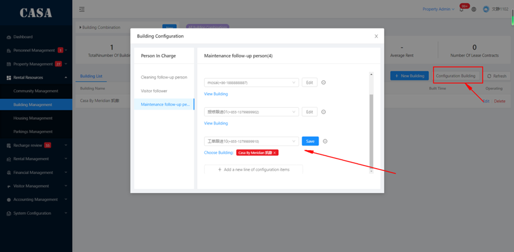

投诉保修 #
注意：使用该功能前，需要对楼栋的投诉保修跟进人进行设置，这样跟进人才具有分配工作的权限。 投诉保修采用工作流的方式执行。
维修人员 和 投诉人员需要录入系统，维修跟进人和投诉跟进人需要先在楼栋上设置
操作视频 #
跟进人设置 #

投诉 #
- 用户在入住房间后，对物业的建议和意见，可以进行投诉建议，然后写下简单的描述后提交。
- 提交后会生成投诉工单，投诉跟进人可以在app或者管理后台进行投诉工单分配
- 跟进人要开始跟进处理名下的投诉工单
- 跟进人完成工作后，用户可以在APP进行评价
维修 #
- 用户在入住房间后，房间内物品损坏，可以提交维修工单
- 在维修页面选择对应的相关分类、时间后提交维修工单
- 提交后会生成维修工单，维修跟进人可以在app或者管理后台进行投诉工单分配
- 跟进人要开始跟进处理名下的维修工单
- 跟进人完成工作后，用户可以在APP进行评价
投诉、维修取消 #
如跟进人与用户沟通后，用户取消工单的情况。
- 跟进人直接在管理后台取消工单即可。工单流程结束。
- 目前只能跟进人进行取消工单